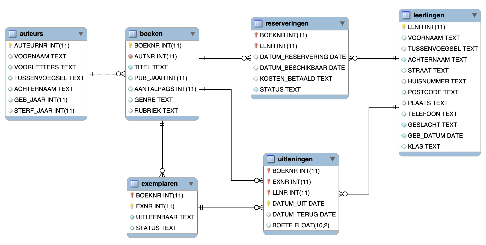

Bibliotheek-voorbeelden (1)#
Voer de onderstaande opdracht alleen uit in Jupyter; niet in Basthon.
%LOAD data/bibliotheek.db
We gebruiken in de volgende voorbeelden een bibliotheek-database, met het volgende schema:

Opdracht. Welke schrijvers zijn geboren na 1960? Geef de voornaam, tussenvoegsel, achternaam, en geboortejaar.
SELECT voornaam, tussenvoegsel, achternaam, geb_jaar
FROM auteurs
WHERE geb_jaar > "1960"
ORDER BY geb_jaar;
Opdracht. Welke boeken vallen niet in de rubriek “nederlands”? (Geef alleen de eerste 10 boeken: titel en rubriek.)
SELECT titel, rubriek
FROM boeken
WHERE rubriek <> "nederlands"
ORDER BY titel
LIMIT 10;
Opdracht. In welke rubrieken worden de boeken ingedeeld? Geef deze in alfabetische volgorde.
SELECT DISTINCT rubriek
FROM boeken
ORDER BY rubriek;
Combineren van tabellen: JOIN#
Met de JOIN - operator kun je tabellen samenvoegen tot één tabel. Voor deze gecombineerde tabel heb je dan dezelfde mogelijkheden als je gezien hebt voor queries met één tabel.
De algemene vorm is:
SELECT <kolomnamen>
FROM tabel1
JOIN tabel2 ON tabel1.kolomx = tabel2.kolomy
WHERE ...
De ON - term beschrijft welke kolommen moeten overeenkomen. Bijvoorbeeld: de kolom boeken.autnr verwijst naar de bijbehorende auteur auteurs.auteurnr. (Dit is een foreign key in de boeken tabel die verwijst naar de primary key van de tabel auteurs.)
De namen van de kolommen in de gecombineerde tabel zijn ontleend aan de namen in de oorspronkelijke tabel. Om misverstanden te voorkomen kun je deze noteren als tabelnaam.kolomnaam, bijvoorbeeld boeken.titel.
Opmerkingen
Je kunt op deze manier ook meer dan 2 tabellen combineren; je krijgt er dan een
ONterm.Er zijn meerdere vormen van de JOIN-operator; daar komen we later op terug.
Opdracht. Welke boeken van Gerard Reve zijn er in de bibliotheek? (Geef titel, jaar van publicatie, en naam van de auteur.)
SELECT titel
, pub_jaar as JAAR
, voornaam, achternaam
FROM boeken
JOIN auteurs ON boeken.autnr = auteurs.auteurnr
WHERE auteurs.voornaam = "Gerard" and auteurs.achternaam = "Reve";
Opdracht. Welke leerlingen hebben een boete van meer dan 3,50 Euro gehad? (Geef voornaam, tussenvoegsel, achternaam, en boete; geef alleen de eerste 10, op alfabetische volgorde van achternaam.)
SELECT voornaam, tussenvoegsel as tv, achternaam, boete
FROM leerlingen
JOIN uitleningen ON leerlingen.llnr = uitleningen.llnr
WHERE boete > 3.50
ORDER BY achternaam
LIMIT 10;
Opdracht. Maak een top-5 van de leerlingen die in totaal het grootste bedrag aan boetes betaald hebben.
SELECT voornaam, tussenvoegsel, achternaam, sum(boete) as Totaal_boete
FROM leerlingen
JOIN uitleningen ON leerlingen.llnr = uitleningen.llnr
GROUP BY voornaam, tussenvoegsel, achternaam
ORDER BY totaal_boete DESC
LIMIT 5;